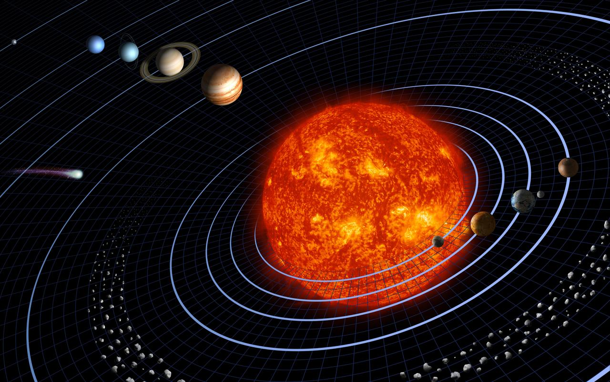

✨ هل تعلم؟
☀️ الشمس
الشمس نجم يقع في مركز المجموعة الشمسية، وتدور الكواكب حولها.
🪐 كوكب المشتري
المشتري هو أكبر كواكب المجموعة الشمسية.
💍 كوكب زحل
يتميز زحل بحلقاته الجميلة التي تتكون من الجليد والصخور والغبار.
🌍 كوكب الأرض
الأرض هي الكوكب الوحيد المعروف حتى الآن بوجود حياة عليه.
🔥 كوكب الزهرة
الزهرة هو أكثر كواكب المجموعة الشمسية حرارة من حيث متوسط درجة حرارة السطح.
🔴 كوكب المريخ
يُعرف المريخ باسم الكوكب الأحمر بسبب لون سطحه المائل إلى الأحمر.
🪐 مقارنة بين كواكب المجموعة الشمسية

| الكوكب | ترتيبه من الشمس | أبرز ميزة |
|---|---|---|
| عطارد | الأول | أقرب الكواكب إلى الشمس |
| الزهرة | الثاني | أعلى متوسط حرارة سطحية |
| الأرض | الثالث | موطن الحياة المعروف |
| المريخ | الرابع | الكوكب الأحمر |
| المشتري | الخامس | أكبر الكواكب |
| زحل | السادس | حلقاته المميزة |
| أورانوس | السابع | يدور حول محوره بميل كبير |
| نبتون | الثامن | أبعد الكواكب عن الشمس |
🔭 أهمية استكشاف الفضاء
يساعد استكشاف الفضاء العلماء على فهم الكون، ودراسة الكواكب والنجوم والمجرات، وتطوير التقنيات العلمية التي تفيد الإنسان في حياته اليومية.